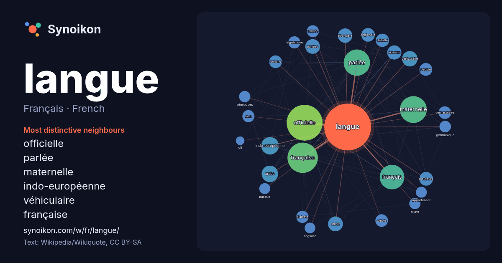

Français · French · popular word
langue
“language” · The words found around it in 2089 instances from French Wikipedia, Wikiquote.

Most distinctive neighbours
- officielle 127×
- parlée 103×
- maternelle 98×
- indo-européenne 49×
- véhiculaire 39×
- française 33×
- parlées 31×
- locuteurs 29×
- arabe 26×
- détaillé 25×
- créole 25×
- romane 24×
- vernaculaire 24×
- dialecte 22×
- étrangère 21×
- d’une 21×
- sémitiques 21×
- écrivain 20×
- statut 19×
- linguistique 19×
× = how many times more often than in general French Wikipedia text.
Most frequent neighbours
- officielle 205
- française 147
- maternelle 115
- parlée 110
- français 96
- famille 65
- pays 55
- indo-européenne 49
- nationale 47
- arabe 43
- groupe 39
- véhiculaire 38
- statut 35
- parlées 34
- seconde 34
- étrangère 33
- écrivain 32
- locuteurs 30
- régionale 29
- détaillé 28
In context
- Pour les articles homonymes, voir Langue (homonymie). Une langue est un système évolutif de signes linguistiques, vocaux, graphiques et/ou gestuels, qui Wikipedia snippets · Langue
- la langue française. Pour les autres significations, voir Français (homonymie). Le français est une langue indo-européenne de la famille des langues romanes Wikipedia snippets · Français
- locuteurs, en Europe centrale, ce qui fait de leur langue la plus parlée au sein de l'Europe en tant que langue maternelle. Article connexe : Distribution des Wikipedia snippets · Allemand
- Langues d'Occitanie ou Patois. L’occitan ou langue d’oc (en occitan : occitan , lenga d'òc ) est une langue romane parlée dans le tiers sud de la Fran … Wikipedia snippets · Occitan
- linguistiques dont la langue majoritaire détermine la langue en usage. La Constitution fédérale fixe quatre principes : l'égalité des langues, la liberté des Wikipedia snippets · Langues en Suisse
- langue arabe. Pour les autres significations, voir Arabe (homonymie). L’arabe (en arabe : ٱلْعَرَبِيَّة, al-ʿarabiyya /alʕaraˈbiːa/) est une langue afro-asiatiq … Wikipedia snippets · Arabe
- concerne la langue anglaise. Pour les autres significations, voir Anglais (homonymie). L'anglais (autonyme : English, /ˈɪŋɡlɪʃ/ Écouter) est une langue indo-européenne Wikipedia snippets · Anglais
- sino-tibétaines. On considère la langue écrite (文, wén) comme la plus universelle, transcendant la prononciation des divers parlers. La langue parlée est le plus souvent Wikipedia snippets · Langues chinoises
More French words
- art
- automne
- carte
- chanson
- chat
- chemin
- cheval
- chien
- climat
- cloche
- cœur
- dieu
- désert
- eau
- famille
- forêt
- histoire
- hiver
- horloge
- jardin
- miel
- miroir
- monnaie
- montagne
- mort
- mère
- nature
- nourriture
- ombre
- pain
- pluie
- pont
- pouvoir
- printemps
- santé
- science
- sel
- silence
- temps
- tempête
- thé
- train
- travail
- trésor
- vie
- ville
- vérité
- étoile
- île
Precomputed on 2026-10-09 with default settings (±5 words, medium corpus). The interactive map can refresh it with live data.